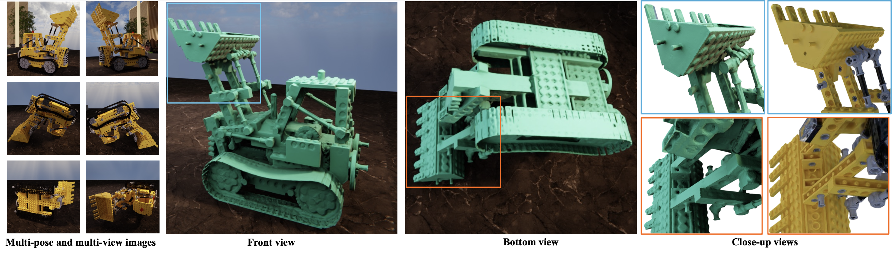
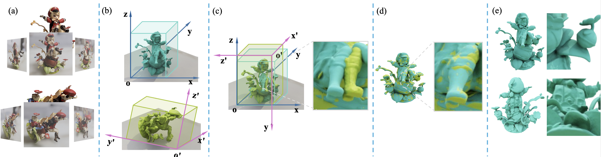
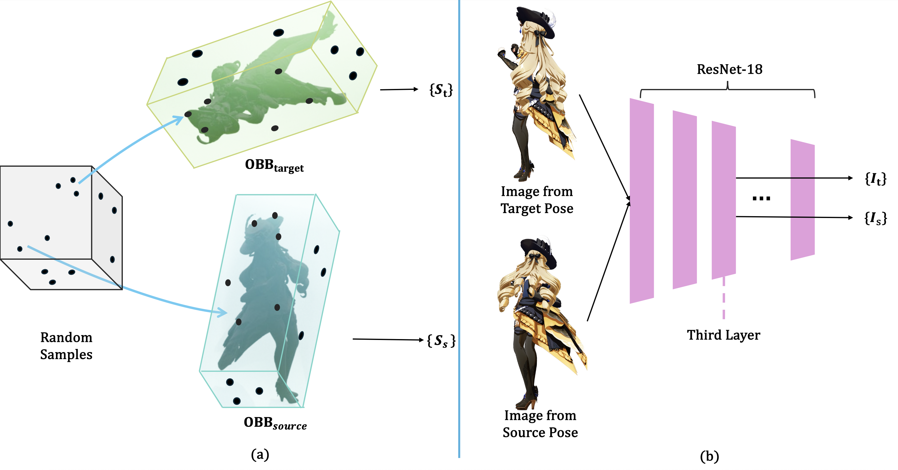
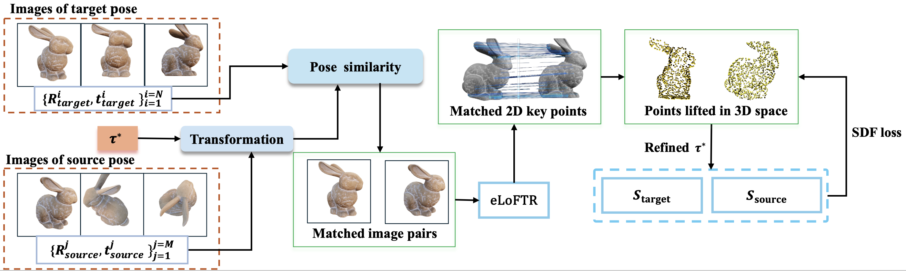

Recent advances in multi-view 3D reconstruction, particularly neural implicit surface methods such as NeuS, have achieved high-quality results by leveraging signed distance functions (SDFs) to model geometry. However, accurately reconstructing complex, self-occluding objects remains challenging when images are captured from a single pose, due to incomplete spatial coverage. To address this limitation, we propose PoseFusion, a novel method for multi-view 3D reconstruction from multi-pose captures. The core idea is to fuse neural implicit surfaces learned independently from each pose into a unified representation. To this end, we design a two-stage registration and fusion pipeline. In the first stage, we compute an oriented bounding box (OBB) from the SDF of each pose. These OBBs, together with corresponding SDF values and multi-view image data, are used to estimate a coarse registration. In the second stage, we introduce an image- and SDF-augmented refinement strategy. By establishing correspondences across multi-view images and lifting them into 3D space, we iteratively refine the alignment between poses and significantly enhance the registration accuracy. To support our study, we introduce a new dataset containing both synthetic and real-world objects with complex geometry and severe self-occlusion, each captured from multiple poses with corresponding multi-view images. Experimental results demonstrate that PoseFusion is robust and capable of reconstructing high-quality geometry from challenging multi-pose, multi-view inputs. We will make the code and dataset publicly available.

PoseFusion reconstructs geometry and appearance from multi-view images captured under multiple poses. (a) Input multi-view images from multiple object poses. (b) Per-pose reconstructions using neural implicit surfaces. (c) Coarse alignment using oriented bounding boxes. (d) Fine alignment guided by image correspondences and SDFs. (e) Final fusion yields a complete 3D reconstruction with enhanced geometric details.

SDF and image-feature-augmented OBB alignment. (a) Sample points are randomly generated on the surface of a unit cube and are mapped to the oriented bounding boxes of the source and target poses. The SDF values at these points are used to compute the geometric distance term. (b) For the input images, feature representations \(\mathcal{I}_t\) and \(\mathcal{I}_s\) are extracted using the third residual block (conv3) of a ResNet-18 network. The features contribute to the image-based similarity term in the alignment objective.

This stage refines pose alignment by combining 2D keypoint correspondences (extracted by eLoFTR) with SDF-based constraints. On the left, we illustrate the selection of image pairs: a coarse transformation is first applied to the source pose’s extrinsic parameters, and candidate pairs are chosen based on the trace of these transformed metrics. eLoFTR is then used to extract 2D correspondences, which are lifted to 3D by tracing along camera rays and snapping to the zero level set. Finally, the source and target SDFs, \(S_{\text{source}}\) and \(S_{\text{target}}\), are used to compute losses that enforce alignment consistent with the implicit surfaces.